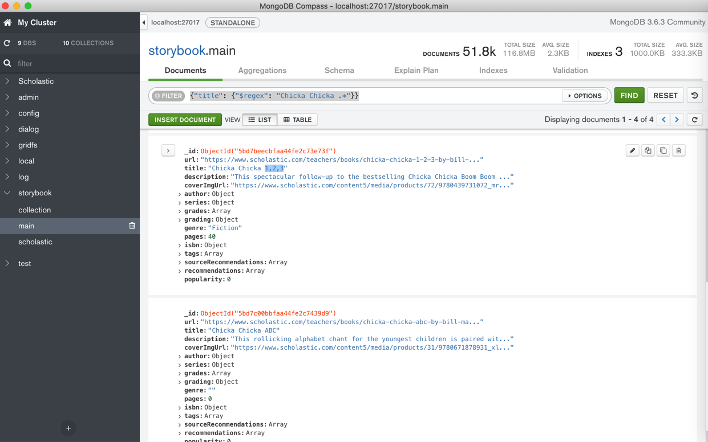
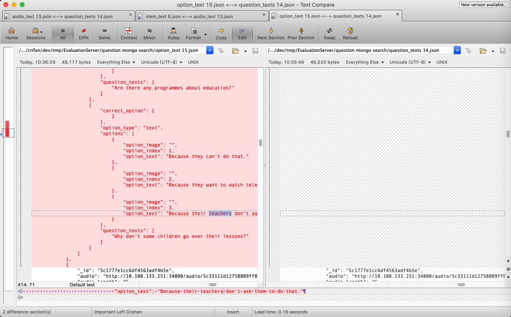

高级搜索
下面介绍在搜索和查询想要的记录时，涉及到的一些高级搜索技巧，尤其是正则搜索和嵌套搜索。
搜索期间的条件组合
背景：搜索数据期间，可能会用到多种条件，不同条件，可能需要组合在一起。
对于组合的种类和语法，详见官网：
->
Query and Projection Operators — MongoDB Manual
先列出有哪些类型：
- Comparison
$eq- Matches values that are equal to a specified value.
$gt- Matches values that are greater than a specified value.
$gte- Matches values that are greater than or equal to a specified value.
$in- Matches any of the values specified in an array.
$lt- Matches values that are less than a specified value.
$lte- Matches values that are less than or equal to a specified value.
$ne- Matches all values that are not equal to a specified value.
$nin- Matches none of the values specified in an array.
- Logical
$and- Joins query clauses with a logical AND returns all documents that match the conditions of both clauses.
$not- Inverts the effect of a query expression and returns documents that do not match the query expression.
$nor- Joins query clauses with a logical NOR returns all documents that fail to match both clauses.
$or- Joins query clauses with a logical OR returns all documents that match the conditions of either clause.
- Element
$exists- Matches documents that have the specified field.
$type- Selects documents if a field is of the specified type.
- Evaluation
$expr- Allows use of aggregation expressions within the query language.
$jsonSchema- Validate documents against the given JSON Schema.
$mod- Performs a modulo operation on the value of a field and selects documents with a specified result.
$regex- Selects documents where values match a specified regular expression.
$text- Performs text search.
$where- Matches documents that satisfy a JavaScript expression.
- Geospatial
$geoIntersects- Selects geometries that intersect with a GeoJSON geometry. The 2dsphere index supports$geoIntersects.
$geoWithin- Selects geometries within a bounding GeoJSON geometry. The 2dsphere and 2d indexes support $geoWithin.
$near- Returns geospatial objects in proximity to a point. Requires a geospatial index. The 2dsphereand 2d indexes support $near.
$nearSphere- Returns geospatial objects in proximity to a point on a sphere. Requires a geospatial index. The 2dsphere and 2d indexes support $nearSphere.
- Array
$all- Matches arrays that contain all elements specified in the query.
$elemMatch- Selects documents if element in the array field matches all the specified $elemMatch conditions.
$size- Selects documents if the array field is a specified size.
- Bitwise
$bitsAllClear- Matches numeric or binary values in which a set of bit positions all have a value of 0.
$bitsAllSet- Matches numeric or binary values in which a set of bit positions all have a value of 1.
$bitsAnyClear- Matches numeric or binary values in which any bit from a set of bit positions has a value of 0.
$bitsAnySet- Matches numeric or binary values in which any bit from a set of bit positions has a value of 1.
- Comments
$comment- Adds a comment to a query predicate.
- Projection Operators
$- Projects the first element in an array that matches the query condition.
$elemMatch- Projects the first element in an array that matches the specified $elemMatch condition.
$meta- Projects the document’s score assigned during $text operation.
$slice- Limits the number of elements projected from an array. Supports skip and limit slices.
可以根据需要选择合适的组合方式。
举例：
db.inventory.find( { $or: [ { quantity: { $lt: 20 } }, { price: 10 } ] } )
和：
var cursor = db.collection('inventory').find({
$or: [ {status: "A" }, { qty: { $lt: 30 } } ]
});
列表子元素搜索
如果是搜索list中所有的元素，即不关心list中具体是第几个元素，那么就直接写成：
mainField.subFieldList
如果要关心具体是哪个位置的元素的值，则使用：.N
比如 第一个是
mainField.subFieldList.0
而更加复杂的组合，可以用到：
$size- 表示list的个数
$all- 表示所有的
$elemMatch
即可。
更多语法细节可参考：
Array Query Operators — MongoDB Manual
字段嵌套搜索
用 点 . 实现字段的嵌套的搜索：
举例：搜索子字段sub_questions的options的option_text
对于内容：
{
"_id": "5c1777e1cc6df4563adf4a5c",
"max_answer_time": 20,
"audio": "5c33111d12758809ff867931",
"stem_type": "mix",
"sub_questions": [{
"option_type": "text",
"correct_option": [3],
"question_texts": [""],
"options": [{
"option_index": 1,
"option_text": "lean",
"option_image": ""
}, {
"option_index": 2,
"option_text": "less",
"option_image": ""
}, {
"option_index": 3,
"option_text": "lesson",
"option_image": ""
}]
}],
......
想要通过子字段sub_questions的options的option_text之类的嵌套字段去搜索
写成：
sub_questions.options.option_text
即可。
支持正则查询
举例：
MongoDB Compass
举例：搜索AD开头的lexile
MongoDB Compass中，想要用正则搜索字段：
grading
lexile: "AD450L"
写法是：
{"grading.lexile": {$regex: "AD.*"}}
或：regex加上行首和行尾判断：
{"grading.lexile": {$regex: "^AD.*$"}}
或 regex用引号引起来
{"grading.lexile": {"$regex": "AD.*"}}
注：
另外试了试：
{"grading.lexile": {$regex: "^AD\d+.*$"}}
发现搜索不到，所以结论是：此处正则搜索不支持\d数字
举例：用正则语法去搜索title
{"title": {"$regex": "Chicka Chicka .*"}}
可以搜到匹配的多个数据：

举例：多个字段同时正则搜索+嵌套搜索+列表字段搜索
此处去实现一个更加复杂的：
- 正则搜索
- 多个条件组合搜索
- 字段嵌套搜索
- 列表字段搜索
要搜索的内容：
{
"_id": "5c1777e1cc6df4563adf4b3c",
"audio": "http://10.108.133.251:34800/audio/5c33111e12758809ff867a5e/238.mp3",
"audio_length": 29,
"audio_text": "f: Hi. I’m Tania. What’s your name? m: Hello. My name’s Jing. f: Nice to meet you, Jing. What class are you in? m: I’m in class 1B. And you? f: Me too. I’m in Class 1B too. m: Who’s our teacher? f: Mr Smith. m: And where’s our classroom? f: This way. Come with me. m: OK. Great.",
"ave_answer_time": 70,
"checkpoint": [
73,
83,
"对话和应答"
],
"difficulty": 3.2,
"major_type": "单选多题",
"max_answer_time": 140,
"question_number": 238,
"stem_image": "http://10.108.133.251:34800/image/5c32f6b012758802476f7f9d/school.png",
"stem_text": "",
"stem_type": "mix",
"sub_questions": [
{
"correct_option": [
1
],
"option_type": "text",
"options": [
{
"option_image": "",
"option_index": 1,
"option_text": "Yes"
},
{
"option_image": "",
"option_index": 2,
"option_text": "No"
}
],
"question_texts": [
"Jing and Tania are in the same class."
]
},
{
"correct_option": [
1
],
"option_type": "text",
"options": [
{
"option_image": "",
"option_index": 1,
"option_text": "Yes"
},
{
"option_image": "",
"option_index": 2,
"option_text": "No"
}
],
"question_texts": [
"Their teacher is a man."
]
},
{
"correct_option": [
2
],
"option_type": "text",
"options": [
{
"option_image": "",
"option_index": 1,
"option_text": "Yes"
},
{
"option_image": "",
"option_index": 2,
"option_text": "No"
}
],
"question_texts": [
"Jing knows where the classroom is."
]
}
]
},
想要搜索字段：
- stem_text
- audio_text
- sub_questions的question_texts（这个列表）中的任何一个
- sub_questions的options（这个列表中的）任何一个的option_text
包含了teacher的话
则搜索条件可以写成：
{
'$or': [{
'stem_text': {
'$regex': 'teacher',
'$options': 'im'
}
},
{
'audio_text': {
'$regex': 'teacher',
'$options': 'im'
}
},
{
'sub_questions.question_texts': {
'$regex': 'teacher',
'$options': 'im'
}
},
{
'sub_questions.options.option_text': {
'$regex': 'teacher',
'$options': 'im'
}
}
]
}
对应代码：
findParam["$or"] = [
{"stem_text": {"$regex": searchText, "$options": "im"}},
{"audio_text": {"$regex": searchText, "$options": "im"}},
{"sub_questions.question_texts": {"$regex": searchText, "$options": "im"}},
{"sub_questions.options.option_text": {"$regex": searchText, "$options": "im"}},
]
相关部分完整代码：
findParam = {}
searchText = parsedArgs["searchText"]
if searchText:
findParam["$or"] = [
{"stem_text": {"$regex": searchText, "$options": "im"}},
{"audio_text": {"$regex": searchText, "$options": "im"}},
{"sub_questions.question_texts": {"$regex": searchText, "$options": "im"}},
{"sub_questions.options.option_text": {"$regex": searchText, "$options": "im"}},
]
majorType = parsedArgs["majorType"]
if majorType:
findParam["major_type"] = majorType
sortBy = "question_number"
log.debug("findParam=%s", findParam)
sortedQuestionsCursor = questionCollection.find(findParam).sort(sortBy, pymongo.ASCENDING)
totalCount = sortedQuestionsCursor.count()
即可搜索到要的内容：

举例：搜索题干类型题目中包含teach的题目
举例另一个复杂的例子：
代码：
findParam = {}
majorType = parsedArgs["majorType"]
if majorType:
findParam["major_type"] = majorType
stemType = parsedArgs["stemType"]
if stemType:
findParam["stem_type"] = stemType
checkpointList = parsedArgs["checkpointList"]
if checkpointList:
checkpointList = checkpointList.split(",")
checkpointOrParamList = []
for eachCheckpoint in checkpointList:
curCheckpointRegex = {"checkpoint": {"$regex": eachCheckpoint, "$options": "im"}}
checkpointOrParamList.append(curCheckpointRegex)
checkpointAndParamList = [ { "$or": checkpointOrParamList} ]
if "$and" in findParam:
findParam["$and"].extend(checkpointAndParamList)
else:
findParam["$and"] = checkpointAndParamList
searchText = parsedArgs["searchText"]
if searchText:
searchTextOrParamList = [
{"stem_text": {"$regex": searchText, "$options": "im"}},
{"audio_text": {"$regex": searchText, "$options": "im"}},
# {"sub_questions.option_type": "text"},
{"sub_questions.question_texts": {"$regex": searchText, "$options": "im"}},
{"sub_questions.options.option_text": {"$regex": searchText, "$options": "im"}},
# {"sub_questions.options.option_image": {"$regex": searchText, "$options": "im"}},
]
searchTextAndParamList = [{ "$or": searchTextOrParamList}]
if "$and" in findParam:
findParam["$and"].extend(searchTextAndParamList)
else:
findParam["$and"] = searchTextAndParamList
sortBy = "question_number"
log.debug("findParam=%s", findParam)
sortedQuestionsCursor = questionCollection.find(findParam).sort(sortBy, pymongo.ASCENDING)
生成的相关搜索条写法是：
{
'major_type': '单选多题',
'stem_type': 'mix',
'$and': [{
'$or': [{
'checkpoint': {
'$regex': '对话',
'$options': 'im'
}
}, {
'checkpoint': {
'$regex': '理解',
'$options': 'im'
}
}]
}, {
'$or': [{
'stem_text': {
'$regex': 'teacher',
'$options': 'im'
}
}, {
'audio_text': {
'$regex': 'teacher',
'$options': 'im'
}
}, {
'sub_questions.question_texts': {
'$regex': 'teacher',
'$options': 'im'
}
}, {
'sub_questions.options.option_text': {
'$regex': 'teacher',
'$options': 'im'
}
}]
}]
}
即可查到需要的内容。
对搜索结果排序
对于搜索出的结果，想要针对某个或某些键去排序，则：
- 总体逻辑
- 给
sort传入key和排序方向- 排序方向值
- 顺序：
1 - 倒序：
-1
- 顺序：
- 排序方向值
- 给
Python的API代码
语法：
collection.find(xxx).sort("key", pymongo.ASCENDING)
举例：不区分大小写找包含sleep的文件名
findFileCursor = fsCollection2.find({"filename": {"$regex": "sleep", "$options": "i"}})
举例：搜索结果根据question_number排序
举例：
sortBy = "question_number"
sortedQuestionsCursor = questionCollection.find(findParam).sort(sortBy, pymongo.ASCENDING)
工具
MongoDB shell或其他GUI工具（比如Robot 3T）中是：
collection.find(xxx).sort({"key": 1})
举例：
db.collection.find().sort( { age: 1 } )